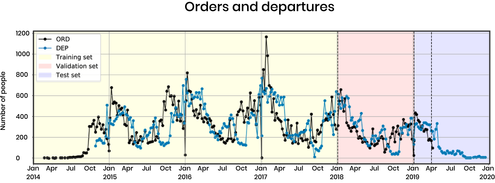
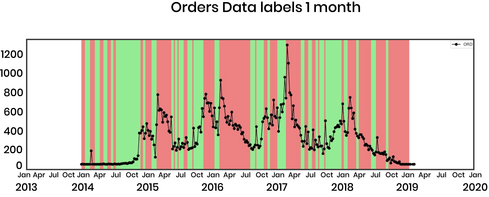

1. Overview
Alpitour is an Italian company that sells prepackaged holiday vacations across the globe. It was founded in 1947 in Italy as a small travel agent and today it is an international group with annual revenue exceed 1.2 billion Euros, ranging from tour operating to hotel management, aviation and travel agencies. With a brand portfolio able to serve highly diversified customers by offering travel packages with “made to measure” experiences, the Alpitour Group is ready to explore the opportunities of a big-data society to better understand its travelers.
Problem Statement
Using Cuba as a case study, this project aims to predict the demand for travel from Italy to Cuba for each week in the next year. We are given internal company booking data and we gather external online/media information to build a predictive model.
Motivation
This is important because Alpitour is a travel company. It needs to know where people will travel ahead of time, so that it can plan accordingly. In particular, Alpitour must plan its flights 6 to 12 months ahead of time for its trips. If it plans too many flights for the corresponding demand, it will lose money. Similarly, if it books too few flights, perhaps it could have gained more money by increasing its capacity. In addition to providing a new way to plan the capacity of future flights, we provide insight into Alpitour's customers and their seasonal behavior. Alpitour's current capacity-planning system is a simple linear model in Excel, where the company sees how many flights it planned last year and the total number of departures, and then makes an estimate for the next year. We plan to provide a much more robust method to make these predictions.
Deliverables
We identified two different figures inside the company that will make use of our predictive tool for the Cuba case and we developed two deliverables accordingly:
- A generalized, documented software pipeline which goes through all of the development stages, from data cleaning to the final prediction. It can be used by Alpitour data scientists/engineers to reproduce our results and to replicate our methodology for new destinations.
- A website to show our methodology and results and an interactive dashboard mockup to help the supply manager understand our predictions for Cuba.
2. Internal Data and EDA
We were given access to internal data of the company of the past four years regarding Cuba. Specifically:
Booking data from Italy to Cuba:
- Purchase date
- Departure date
- Number of passengers
- Age of person making booking
- Price of booking
- Destination city
- Travel agency (Alpitour or subsidiaries)
Google Ads information related to Cuba as a destination:
- Date
- Average page session time
- Number of passengers
Google Ads information related to Hotel Caraibi in Cuba:
- Date
- Average page session time
Page visits on Alpitour’s website:
- Number of sessions for each Alpitour page
- Bounce rate
- % of new sessions
- Transactions
- Revenue
Capacity per flight
- Date
- Airport
- Capacity
- Passengers
The data preprocessing stage can be summarized as follows:
This shows the dependencies of the datasets in question. If any of the data changes, Alpitour should update all datasets that are "downstream" (i.e. there are arrows leaving the dataset to some other dataset that should be updated). Due to the sparsity of data of the datasets provided, we decided to use a timestep of a week, aggregating values referring to days of the same week. Otherwise, there is simply too much noise in the data. For example, if a given week has 300 orders, it's possible that 250 were on a single day, with the remaining 50 spread across 6 other days. This would be difficult for a model to learn, since the fluctations would be so drastic. Therefore, it is better to aggregate our data by week. We do this for all of our features from both internal and external data, so that our models can consider a snapshot of features for a given week, whether using time series models or not.
Here we can see the plot of orders and departures from January 2014 to January 2019:
This shows the orders and departures. For our models, we used the data through the end of 2017 as our training set, with 2018 as a validation set, and 2019 as a test set (including future dates to test our seasonal approach). We can see in the data that the orders precede the departures, and that there are seasonal trends when people tend to travel the most, shown by the departure peaks (blue) in the January months.
We also investigated the features of Alpitour customers, and found that ages were about normally distributed, with not much variance in the price and duration of trips overall, although more elderly travelers did tend to buy slightly more expensive packages.
We created features from the moving average convergence divergence (MACD), which captures a sense of momentum in demand for travel from Italy to Cuba. Essentially, we subtract the moving average of the last 26 weeks from the moving average of the last 12 weeks. If this number is positive, we get a sense of how the demand is moving higher in the short term compared to the long term. We also compute a "signal line", which is the moving average of the MACD line over the last 9 weeks. For weeks where the MACD line is larger than the signal line, we have a pseudo 2nd-derivative, meaning that the demand is accelerating in the positive direction, so we create a "buy" feature (indicator: 1 or 0) for these time periods.
- MACD line: MA(ORD,12 weeks) - MA(ORD,26 weeks)
- Signal line: MA(MACD, 9 weeks)
- Up: if MACD > Signal
3. External Data
Italian Digital Media
One of the company’s requirements was to detect the most influential sources both in digital media and social media communities correlated to Alpitour customers behaviors in travel purchasing. Unfortunately, there were no free solutions to evaluate the impact of a topic (such as Cuba, in this case) or a hashtag over time on the most used social networks in Italy: Facebook and Instagram. For these reasons, we focused our attention on Italian digital media sources, since all the customers of the company are Italians. Here is a list of media sources suggested by Alpitour that we investigated. We built generalized web scrapers for these platforms. They can be divided into two different groups:
Travel Digital Media
- L’agenzia di viaggi
- Travel Quotidiano
- Turismo & Attualità
- Il giornale del turismo
- Webitmag
Consumer digital media
- Vanity Fair
- La Repubblica
- TravelGlobe
- Il giornale del turismo
- In Viaggio
Additionally, we built a scraping tool to extract news from the EMM (European Media Monitor), which is a news aggregator website. This tool increased dramatically the amount of Italian news per week retrieved.
Once we completed the scraping process, we had a dataset containing the following features for each news article related to Cuba:
- Date
- Title (Italian)
- Corpus (Italian)
Using the Google Translate API we translated the title and corpus preview to English. Then, we used a pretrained model to assign a sentiment score to the title and corpus preview. Sentiment analysis is a natural language processing method to identify/classify subjective information of the news regarding its feeling/opinion. Specifically, for each text analyzed we had a corresponding value in the continuous range [-1, 1]:
- -[-1, 0): negative
- 0: neutral
- (0, 1]: positive
From these values, we were able to extract weekly features such as the number of articles per week (large volume is correlated with large orders), percentage of positive vs. negative news, average level of positivity among positive news, etc.

In the above plots, we plot the distribution of the sentiment scores conditioned on whether the response variable is up or down. In this case, the response variable is whether or not the average orders/week increases over the next 1 month compared to the current week. Since we see a a non-uniform distribution of the sentiment scores, we expect them to have some predictive capability. However, we discovered empirically that these were not helpful in predicting future orders.
Google Trends
In order to enrich our dataset, we also retrieved Google Trends data of the past four years for general queries such as “Cuba travel” and “Cuba vacation” and for specfic queries regarding Alpitour’s hotels locations: “Cayo Largo”, “Holguin”, etc. Grouping Google Trends results per week gave us a plot which is highly correlated with the number of orders, as we can see from the image below:

Google Searches
Giving the promising results of Google Trends data, we decided to move our analysis of Google data further and we built a scraping tool for Google search. For each week from January 2014 to April 2018, we retrieved the top 100 results of Google search for the query “Cuba” which were published in that specific week. In this way we were able to gather news, posts and reviews from Italian sources. This time, instead of applying a sentiment analysis on the scraped data we tried a different approach. First of all, we built a “ground truth” of travel-related websites performing a set of queries related to topics such as “travel”, “vacation” and so on. Then, for each week, we evaluated the weight of the portion of results which were published on our "ground truth" (identified) travel-related sites. Specifically, we created two different features:
- Ratio: the percentage of results from travel sites over all the results
- Rank: summation of the reciprocal of the rank of travel sites
Unfortunately, the extracted features are noisy, and uncorrelated with respect to orders data, as we can see from the image below where they have been both normalized between 0 and 1.
4. Pipeline and Models
Our first deliverable is a documented software pipeline which goes through all the development stages, from data cleaning to the final prediction. It is intended to be used by Alpitour data scientists/engineers to reproduce our results and apply the methodology to other locations. Alpitour would first need to collect the correct data for the new location. Code and documentation can be found here.
The pipeline is made of three main stages as we can see from the picture above.
- Gather data: in this phase all the external data is collected and merged with the internal data provided by Alpitour
- Process data: data is then cleaned and then processed to generate visualizations and new features
- Model: processed data is used to fit our models and to make future predictions
Classification
We first modeled the problem as a binary classification problem, since we thought it would be easier to determine the direction of movement rather than the exact number of orders or departures. We classified the direction of average order demand per week in the next 1 to 3 months. Here we can see an example of how the data was labeled in order to fit and evaluate the classification models. This is referring to departures one month ahead:
As explained earlier, we used the moving average convergence divergence (MACD) features to capture the momentum in demand for each time step (week), which was effective, reaching a largest AUC value of 0.79. Our benchmark here was a logistic regression model for the next 1 month, using only the order and departure data (no MACD, no other features), which had an AUC Of 0.57. Therefore, we saw a lot of improvement from start to finish in the classification setting, through choice of models, feature generation, and feature selection.
However, although the results were good and could help Alpitour to know when there will be surges in orders, Alpitour would ideally receive this information on a finer granularity, and so we also explored regression.
Regression
For regression, we first tried to predict the average number of departures/week in the next 1-3 months using random forest regression, and achieved R2 values of about 0.85. Although this was good, again, we needed finer granularity. So, we tried to predict the number of departures/week for each of the next 12 weeks:
As we see in these plots, the regression works reasonably well for predicting 1 week ahead, but the performance is much worse for predicting 12 weeks ahead. When we met with Alpitour in Italy, and they explained to us their situation of planning capacity up to a year in advance, and therefore they need predictions not only on a per-week basis, but up to a full year. This was challenging, since we had just shown that our model for predicting the 12th week did not perform well. After reaching this point, we began to consider time series models.
Within time series models, we used three models that performed poorly, and one model that was great. The first three models were ARIMA, which was limited by the features it could use at each time step. The second was a Gaussian process with a seasonality kernel, which did not learn the stochastic process of our data. The third was an LSTM network, which performed very well for predicting 1 week ahead, but was too general when trying to predict a full year ahead. Examples of these LSTM plots are included below. Next, we will explain the best model.
Most important model
To solve the problems explained previously, we considered a seasonal additive model for regression, which ended up being our most valuable contribution to the project. We are able to predict a full year in advance, and therefore aid Alpitour supply managers in planning travel capacity.
The approach is articulated into different steps:
- Abstract seasonality: we use an additive model to decompose the target Y[t], where t denotes the time step. An example target is the number of future departures per week:
Y[t] = S[t] + T[t] + E[t]
We reconstruct the target data Y[t] with the seasonality (S), trend (T), and residual noise (E). Here we can see a 52-week seasonality decomposition of departures per week. The seasonal pattern is obtained by passing a convolutional filter over the time series data. -
Model the trend: we use different regression models to model the trend (deviation from seasonality) using useful features like booking data and external Google Trends data.

-
Combine seasonality and trend: finally, we add the two signals to obtain our predictions for the future (in this case, the validation and test sets).

We evaluated the performances of different regression models on the validation set (2018) using a benchmark of predicting the mean departures from the training set as the prediction for each week in the future. As our metric, we used the ratio of mean squared error (MSE) of the benchmark model to the model in question. The larger the number, the greater the improvement from the benchmark to the new model, since the new model MSE is in the denominator.
Estimated Business Value
Recall that Alpitour books flights up to 1 year in advance, so they need predictions of departures up to 1 year in advance and manage their flight capacity accordingly. If Alpitour doesn’t fill its capacity, it may lose money. If Alpitour fills its capacity, maybe it could have sold more trips, which is an opportunity cost. So, if we can help Alpitour by getting more accurate predictions of the departures, we are creating business value. The following section is used only as an estimate in order to see how this project adds value to Alpitour.
We want to quantify the value Alpitour can gain by using our model by using the predicted departures for each week in the validation set (2018) as the updated capacity Y'. By comparing the value lost by Alpitour using its current planned capacity vs. the capacity from our predicted departures, we can estimate the money we earn back for them.
In the validation set (year of 2018), for each week t, we have:
- Pt: Alpitour’s price/person for a flight for a booked trip in week t, estimated at 10% of the avg. price/person for a total trip at week t
- Yt: actual number of departures to Cuba
- Ct: 2018 capacity planned by Alpitour
- Y't: predicted departure of our models as the updated capacity
Loss = Pt * |Yt – Ct|
This loss measure the two types of loss from Alpitour for current capacity:
- If Ct > Yt then Alpitour does not fill its capacity and loses value (shown in red region).
- If Yt > Ct then Alpitour could book more flights and loses the potential revenues (shown in pink region).
When we calculate the loss using our model result of predicted departures, there is a tiny update for the case when Y't > Yt:
- If Y't > Yt and Yt >= Ct: actual departure was limited by Alpitour capacity, and Alpitour should plan more seats for those weeks. Therefore, this difference of Y't > Yt should not be considered as loss (shown in green region)
- If Y't > Ytand Yt <= Ct: actual departure reflects the true demands, and therefore our model is over-optimistic and loses value by not filling its capacity (same calculation as the red region in the previous plot).
Otherwise, if Y't <= Yt, then Alpitour could book more flight and increase revenue, so there is opportunity cost of Pt * (Yt - Y't)
Unbooked value lost using current capacity:
€505,413.52
Unbooked value lost using predicted departures as the planned capacity:
€440,070.02
We save €65,343.50 of value for the Cuba case in 2018. This is revenue, not profit, so the true profit will be smaller and it depends on Alpitour’s operating profit margin. It also may cost Alpitour to change its capacity schedule. Furthermore, Alpitour has its own planes, and this assumes that the company can modify the capacity to any integer number of seats, but in reality they company may need to fill another full flight (or half) before increasing the capacity.
5. Dashboard
The user
The Dashboard is one of the two final deliverables. The intended user of the dashboard is the supply manager of Alpitour. The skills of the Supply manager are:
- Managing the company supply chain by booking flights and hotels
- A strategic point of view, but no knowledge of code
With the dashboard it will be possible to visualize the predictions of each airport served by Alpitour in Cuba. This is a mockup, but it helps the supply manager to understand how to interpret the predictions, which will be constantly changing as the company brings in new data.
The deliverable
The Dashboard visualizes the predictions of the model with a prediction line and uncertainty bounds for each airport. The first screen shows the map of Cuba with all the airports that are used by Alpitour:
- Camagüey-CMW
- Havana-HVA
- Holguín-HOG
- Santa Clara-SNU
- Santiago de Cuba-SCU
- Varadero-VRO
The user can select the airport he/she wants to see by clicking on the map or on the buttons on the side of the screen. The airport selected will be highlighted in orange (in this case, Havana). The map will zoom in on the airport selected.
By clicking on "See data" it is possible to see in details the prediction for that airport. The orange line is the prediction given by the model up to one year in the future. The white line is the current planned capacity, which is the number of plane reservations bought by Alpitour to be sold to the customers. The yellow line shows the number of orders already purchased by Alpitour’s customers. When the yellow line stops, it means that Alpitour has not started to book any departures/flights for that time of the year (since it is almost a year ahead of time).
By using a calendar, it is possible to select the period of time in months that the users wants to see in detail. In this case, the image is between May and July 2019. The predicted departures trendline will adjust to the new period of time and will highlight the weeks.

By clicking on the trendline the user is able to see the details about a certain week:
- Week Selected
- Predicted passengers
- Capacity
- Orders purchased
6. Conclusions and Future Work
In conclusion, we developed two main models:
- Additive model with a Gaussian process regression on the trend to predict the orders and departures per city in Cuba for up to a year in advance.
- Binary classification of average future weekly order demand (increase or decrease) using a fully-connected neural network.
In addition to these models, we provide the company with a generalized code repository that will be a pipeline for software engineers and data scientists to replicate our methodology and expand the predictive capability to different destinations. This is the result of our final prediction for L’Avana. The Gaussian process regressor provides a confidence interval with upper and lower bounds for the predicted values of 1 standard deviation. In this way, the supply manager can also take into account quantitatively the possible errors of the future predictions and make his/her decision accordingly.
Interesting avenues for potential development include:
- Obtain more data (internal and external) and generate more features to improve the quality of our predictions
- Adjust historical departure data when capacity was filled so that the model can learn to exceed fixed capacity levels if the demand is large
- Connect the pipeline and the frontend website with a backend. In this way the website can be used as an entry point for the pipeline, displaying fresh results in real time
- Combine predictions of departures with (i) ability to change capacity of flights per-seat vs. booking a full new plane, and (ii) hotel availability
7. Literature Review
Topics and Justification
Time series data- ARIMA
- RNN (sequence modeling for time series prediction)
- Additive Model
- Bag of words (BOW)
- Term frequency–inverse document frequency (TF-IDF)
- Latent Dirichlet Allocation (LDA)
- Random Forest Classifier
- Multi-layer Perceptron
- Logistic Regression
- ARIMA
- RNN (sequence modeling for time series prediction)
- Additive Model
- Gaussian Process
- Other: MLP, Random Forest Regresso
Literature Review: Citations
ARIMA- Hillmer, Steven Craig, and George C. Tiao. "An ARIMA-model-based approach to seasonal adjustment." Journal of the American Statistical Association 77.377 (1982): 63-70.
- Connor, Jerome T., R. Douglas Martin, and Les E. Atlas. "Recurrent neural networks and robust time series prediction." IEEE transactions on neural networks 5.2 (1994): 240-254.
- Hastie, Trevor J. "Generalized additive models." Statistical models in S. Routledge, 2017. 249-307.
- Rasmussen, Carl Edward. "Gaussian processes in machine learning." Summer School on Machine Learning. Springer, Berlin, Heidelberg, 2003.